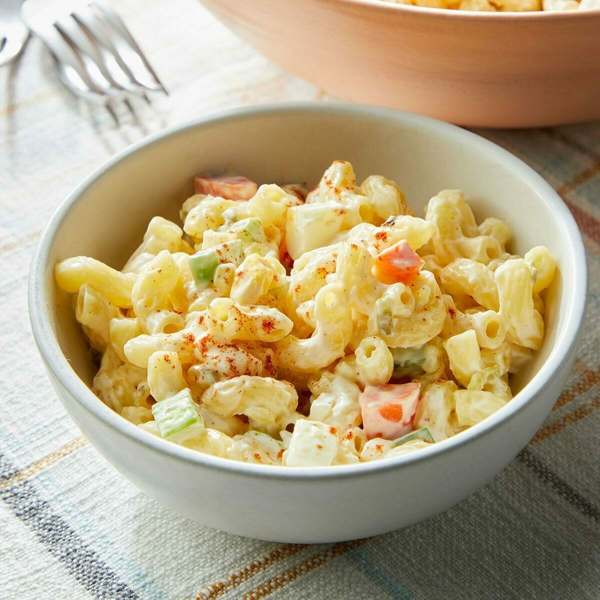

Home
Classic Macaroni Salad

Description
This creamy macaroni salad always gets lots of compliments.
It's an easy recipe to make with macaroni pasta, celery, onion, bell pepper, carrot, and pimentos and has a
pleasing tangy dressing that everyone seems to love!
Ingredients
- Macaroni: Of course, you will need macaroni pasta!
- Condiments: A creamy blend of mayonnaise and yellow mustard adds tons of flavor.
- Sugar and vinegar: White sugar adds a dose of sweetness, which is pleasantly balanced by
white vinegar. You can, of course, add as much or as little sugar to suit your taste.
- Seasonings: This macaroni salad is simply seasoned with salt and ground black pepper.
- Vegetables: You will need celery, an onion, and a bell pepper. Grated carrots and pimento
peppers are optional, but they add welcome flavor and color.
Recipe Instructions
- Cook the macaroni in salted water.
- Mix together mayonnaise, mustard, seasonings, vinegar, and sugar to taste.
- Stir in the macaroni and remaining ingredients. Chill in the refrigerator.